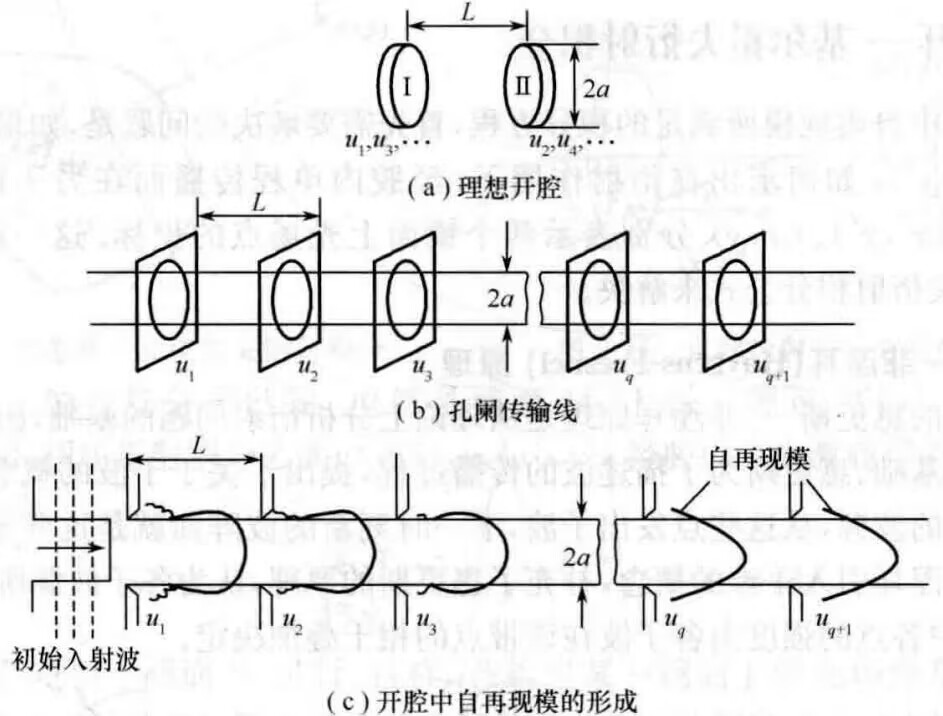

本节先分析开腔中自再现模（横模）的形成过程，然后从Fresnel-Kirchhoff衍射积分公式出发，建立谐振腔自再现模所满足的积分方程，并讨论该方程解的物理意义.
设平行平面腔如图(a)所示，两块反射镜直径均为\(2a\)，腔长为\(L\).
以此腔为例，分析光波在腔内的往返传播对横向光场分布的影响.
为了更形象地理解这种在开腔内如何形成稳定的光场分布，可用孔阑传输线来模拟谐振腔.
如图(b)所示，孔阑传输线是由一系列间距等于腔长，孔径等于反射镜直径的同轴圆孔构成，这些圆孔开在平行放置的、无限大的完全吸收屏上.
光波在谐振腔内的往返传播，可等效于光波在孔阑传输线上的单方向传播，开腔中稳定光场分布的形成，可用光在孔阑传输线上的传播来说明.

[设]初始时刻一均匀平面波垂直入射到第一个圆孔上，此时，该孔径内的场分布是均匀的.
穿过第一个圆孔后，由于衍射作用，部分光将偏离原来的传播方向，光场分布将产生衍射旁瓣而不再是均匀平面波了，使光波的振幅与相位分布均发生一些变化.
到达第二个圆孔时，射到圆孔以外的光将被屏完全吸收，因此光波边缘部分的能量将比中心部分弱.
当穿过第二个孔时，再发生衍射作用，达到第三个圆孔处，又有部分光场能量由于扩展到孔外而被吸收，使得边缘处的光场更弱.
顺次通过接下来的圆孔时，将继续发生上述过程.
每通过一次圆孔，光场的振幅与相位就发生一次改变.
这样，在通过足够多的圆孔后，光波的振幅与相位分布受衍射的影响越来越小，以至于形成一种稳定的分布而不再变化.
图(c)表示了这一过程.
光在腔内的往返传播过程[设]初始时刻在镜面\(\text{M}_1\)上有某一个光场分布\(u_1\)，到达镜\(\text{M}_2\)上时，由于衍射损失一部分能量，进而变成新的光场分布\(u_2\)，经\(\text{M}_2\)镜反射再传播会到\(\text{M}_1\)镜时又将形成新的场分布\(u_3,~u_4\cdots\)，如此不断进行下去.
每经过一次传播，光波因衍射而损失一部分能量，并且衍射还将引起能量分布的变化.
经过足够多次的往返渡越后，所生成的场分布都将明显地带有衍射的痕迹，也就是在镜面边缘处的场振幅比镜面中心部分的场振幅要小得多，这几乎是一切开腔模的场分布的共同特点.
理论分析表明：经过足够多次的往返传播后，腔内能形成一种稳定场，其光场的相对分布将不再受衍射作用的影响，经一次往返后，唯一可能的变化，只是镜面上各点的场振幅按同样的比例衰减，各点的相位发生同样大小的滞后.
这种存在于腔反射镜面处，且往返传播后仍能再现的稳定场分布称为自再现模，也就是横模.
大部分语境下，横模就是自再现模.
不同的初始场分布\(u_1\)可得到不同的稳态场分布，这说明开腔的横模模式有多种.
因此，激光的横模，实际上就是谐振腔所允许的光场的各种横向稳定分布.
开腔中的任何振荡都是从某种偶然的自发辐射开始的，故可以提供各种不同的初始场分布.
这里指的是自启动激光器，就是不需要种子源的激光器.
泵浦源和种子源不是一类东西，自启动激光器是泵浦源提供能量激光器就能运转，不需要种子源.
衍射作用在此起到一种“筛子”的作用，它将所有可能存在的各种自再现模筛选出来.
光场在谐振腔内形成稳定分布主要是光的衍射作用所致，谐振腔的其他损耗，如光的吸收、散射等，只是使截面上各点的场按同样比例衰减，对场的空间分布不发生什么影响.
对于激光器开腔来说，若给定某一镜面上的光场分布函数，如何计算当光波渡越到另一镜面处时所形成的新光场分布的分布函数呢？
[设]镜面\(\text{M}_1\)上的光场分布已知，即镜面\(\text{M}_1\)上任一源点\(P'(x', y')\)的光场强度\(u_1(x', y')\)已知.
利用衍射积分公式，\(u'(x_1, y_1)\)经腔内一次渡越后，在镜面\(\text{M}_2\)上形成的光场\(u_2(x,y)\)为：
$$u_2(x,y) = \frac{ik}{4\pi}\iint_{S_1}u_1(x', y')\frac{e^{-ikr}}{r}(1 + \cos\theta)\mathrm{d}s'$$积分沿镜\(\text{M}_1\)的整个镜面\(S_1\)进行.
这样，若给定某一镜面上的光场分布函数，通过Fresnel-Kirhhoff积分，就可以计算出当光波渡越到另一镜面处所形成的新的光场分布函数.
[设]\(u_j(x',y')\)为经过\(j\)次渡越后再某一镜面上所形成的场分布.
[设]\(u_{j+1}(x,y)\)为光波\(u_j(x',y')\)再渡越一次腔长距离后，到达另一镜面所形成的光场分布.
则它们之间应该满足类似的迭代关系：
为简化问题，这里只考虑对称开腔的情况.
按照自再现模的概念，其在腔内渡越一次后，除振幅衰减与相位滞后外，场的相对分布保持不变.
也就是说，当迭代方程中的\(j\)足够大时，除了一个表示振幅衰减和相位移动的常数因子外，\(u_{j+1}\)应能将\(u_j\)再现出来，二者间的关系为：
$$u_{j+1} = \frac{1}{\gamma}u_j（j足够大时）$$上式就是模式自再现概念的数学表述，其中\(\gamma\)为一个与坐标无关的复常数.
将上式代入迭代方程，有：
$$u_j(x,y) = \gamma\frac{ik}{4\pi}\iint_S u_j(x',y')\frac{e^{-ikr}}{r}(1 + \cos\theta)\mathrm{d}s'$$以\(v(x,y)\)表示开腔中不受衍射影响的稳定场分布函数，可将上式进一步简写为如下标准形式：
$$v(x,y) = \gamma\iint_S K(x,y,x',y')v(x',y')\mathrm{d}s'$$ $$K(x,y,x',y') = \frac{ik}{4\pi}\frac{e^{-ikr(x,y,x',y')}}{r(x,y,x',y')}(1 + \cos\theta)$$由于光学开腔的腔长\(L\)通常远大于反射镜的线度\(a\)，即\(L\gg a\)；反射镜的曲率半径\(R\)往往也远大于反射镜的线度\(a\)，即\(R\gg a\)；这种情况下，上式被积函数中，有：
$$\cos\theta\approx 1,\quad r\approx L$$ $$\therefore \frac{(1 + \cos\theta)}{r}\approx \frac{2}{L}$$由于指数中与\(r\)相乘的光波矢\(k\)值很大，直接用\(L\)代替\(r\)会引起较大误差，因此指数中的\(r\)不能用\(L\)代替，只能根据不同的腔面形状再做不同的近似处理.
利用上述近似结果进一步简化，得：
满足该方程的任一场分布函数\(v(x,y)\)就描述一个自再现模式横模.
式中\(K(x,y,x',y')\)称为积分方程的核.
上式对于由两个相同的反射镜组成的任何光学谐振腔均适用，只是对于不同的谐振腔（如平行平面腔、共焦腔、一般球面腔等），积分核中的\(r(x,y,x',y')\)具有不同的表示形式.
满足上述积分方程式的函数\(v(x,y)\)称为本征函数，常数\(\gamma\)称为本征值.
开腔自再现模积分方程存在一系列不连续的本征函数解与本征值解，表示腔中存在的不同自再现模（横模）.
通常以\(v_{mn}(x,y)\)表示其第\(mn\)个本征函数解，\(\gamma_{mn}\)表示相应的本征值，其中\(mn\)为横模序数.
本征函数一般为复函数，其模\(|v_{mn}(x,y)|\)描述镜面上场的振幅分布；其辐角\(\arg[v_{mn}(x,y)]\)描述镜面上场的相位分布.
本征值\(\gamma_{mn}\)一般也是复数，其模反映了自再现模在腔内单程渡越所引起的功率损耗.
在对称开腔情况下，模的平均单程损耗为：
$$\delta = \frac{|u_j|^2 - |u_{j+1}|^2}{|u_j|^2}$$ $$\because u_{j+1} = \frac{1}{\gamma}u_j$$故\(\gamma_{mn}\)对应的单程损耗为：
$$\delta_{mn} = 1 - \left\lvert\frac{1}{\gamma_{mn}}\right\rvert^2$$该式说明：单程损耗随横模模式不同而不同，且\(|\gamma_{mn}|\)越大，模的单程损耗\(\delta_{mn}\)就越大.
\(\delta_{mn}\)表示了自再现模在开腔中完成单程渡越时的总功率损耗，此损耗包括衍射损耗与几何损耗（主要是衍射损耗），为叙述方便，后续统称为单程衍射损耗.
故\(\gamma_{mn}\)所对应的单程总相移为：
$$\delta\Phi = \arg\frac{1}{\gamma_{mn}}$$为使自再现模在腔内能够形成稳定振荡，必须满足多光束相长干涉条件，即要求自再现模在腔内往返一次的总相移为\(2\pi\)的整数倍.
因此，一旦在开腔自再现模积分方程中解得\(\gamma_{mn}\)的表达式，由对称开腔自再现模的谐振条件即可确定模的谐振频率.
此外，自再现模在对称开腔中的单程总相移一般并不等于由腔长\(L\)所决定的几何相移\(\frac{2\pi}{\lambda}L\)，而是有如下关系：
$$\delta\Phi = -\frac{2\pi}{\lambda}L + \Delta\varphi$$\(\Delta\varphi\gt 0\)时，表示附加相移超前；\(\Delta\varphi\lt 0\)时，表示附加相移滞后.
几何相移是由反射镜的几何尺寸决定，而附加相移是由于衍射使得波阵面发生了畸变引起的.
由于附加相移的存在，使得谐振腔的共振频率偏离于由驻波条件所确定的频率，这一点也是开腔的一个特点.
结合对称开腔自再现模的谐振条件，可以写出：
$$\Delta\varphi_{mn} = \frac{2\pi}{\lambda}L + \arg\frac{1}{\gamma_{mn}}$$该式说明：单程附加相移与本征值\(\gamma_{mn}\)的辐角有关，且不同横模的单程附加相移也不同.
综上，对于对称开腔而言，自再现模积分方程的本征函数决定了镜面上不同横模光场的振幅与相位分布.
本征值决定了不同横模的单程损耗、单程相移及谐振频率.
以上所讨论的都是对称开腔的情况，对于非兑成开腔，应按光波场在腔内往返一次写出模式自再现条件及相应的积分方程.
其中方程的本征函数解只能确定某一镜面上的稳态场分布.
本征值\(\gamma\)的模确定的是自再现模在腔内往返一次的功率损耗，辐角确定的是往返总相移，并从而决定模的谐振频率.
本节推导了对称开腔中的自再现模积分，并讨论了方程解的物理意义.
至此，要求开腔中振荡模式的特征，归结为求解开腔自再现模积分方程.
该方程在积分方程理论中被称为第二类弗里德霍姆齐次积分方程，数学上可证明这种方程的解析解是存在的，但至今仍未找到一般的解析求解方法，只能针对不同结构的腔采用不同的方法.
e.g.
对于平行平面腔，可采用迭代法进行数值计算，结果只能以图或表的形式给出；
对于对称共焦腔，可用解析法求出方程的精确解及近似解的解析表达式.